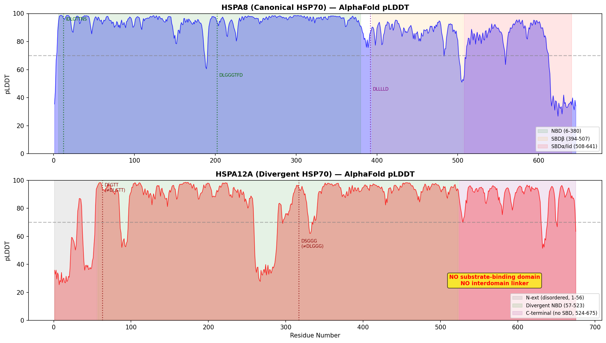
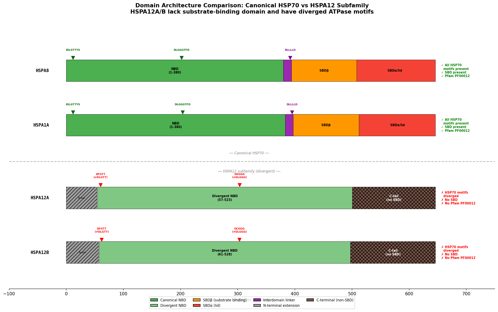
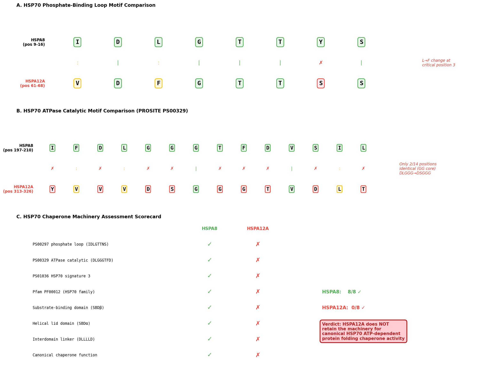

HSPA12A is an atypical and still poorly characterized HSP70-family protein. The strongest direct mechanistic evidence supports ATP/ADP-sensitive binding to the cytosolic tail of SORL1/SorLA and modulation of SorLA trafficking, while later disease- and tissue-specific studies suggest context-dependent signaling or scaffold-like roles rather than a conserved GO-ready core activity. Current evidence supports a narrow SorLA/SORL1-selective adaptor-like trafficking role and does not establish canonical ATP-dependent protein folding chaperone activity or another broad core proteostasis function for HSPA12A.
Definition: Binding to the cytoplasmic domain of a sorting receptor, permitting selective regulation of receptor internalization or intracellular trafficking.
Justification: Current GO molecular function terms do not cleanly capture the experimentally demonstrated selectivity of HSPA12A for the SorLA/SORL1 cytoplasmic tail. GO:0019904 protein domain specific binding is usable but too generic, GO:0140355 cargo receptor ligand activity describes ligands that initiate endocytosis rather than cytosolic tail binders, and GO:0140312 cargo adaptor activity would overstate the evidence because direct bridging to coat scaffolds was not shown.
Parent term: protein domain specific binding
Supporting Evidence:
| GO Term | Evidence | Action | Reason |
|---|---|---|---|
|
GO:0005515
protein binding
|
IPI
PMID:30679749 HSPA12A targets the cytoplasmic domain and affects the traff... |
MODIFY |
Summary: MODIFY. PMID:30679749 demonstrates a specific, ATP/ADP-sensitive interaction between HSPA12A and the cytosolic tail of SORL1/SorLA together with delayed receptor internalization, so GO:0005515 should be replaced by more informative terms capturing receptor-tail binding and trafficking control.
Reason: GO:0005515 is too generic for this evidence. The paper supports a selective SorLA cytoplasmic-domain interaction with a clear trafficking consequence, but it does not justify canonical HSP70 chaperone activity. I am using the conservative existing MF term GO:0019904 as the replacement and adding the trafficking consequence as a separate NEW BP annotation below. The more specific missing function is captured below as a proposed new receptor-tail binding term rather than overcalling HSPA12A as a canonical cargo adaptor.
Proposed replacements:
protein domain specific binding
Supporting Evidence:
PMID:30679749
We have identified HSPA12A as a new adaptor protein that, among Vps10p-D receptors, selectively binds to SorLA in an ADP/ATP dependent manner.
PMID:30679749
We also observed that the endocytic capacity of SorLA was lowered by HSPA12A expression (Fig. 7).
file:human/HSPA12A/HSPA12A-uniprot.txt
CC -!- FUNCTION: Adapter protein for SORL1, but not SORT1. Delays SORL1
file:human/HSPA12A/HSPA12A-deep-research-falcon.md
HSPA12A was identified as a **specific SorLA cytosolic-tail interactor**; Y2H recovered C-terminal HSPA12A clones, GST-HSPA12A pulled down full-length SorLA, and binding mapped to SorLA cytosolic acidic clusters including E34-D38 and D47D48. HSPA12B was negative in Y2H, arguing against paralog transfer.
file:human/HSPA12A/HSPA12A-deep-research-falcon.md
HSPA12A **delays SorLA internalization/endocytosis**: surface SorLA staining persisted longer in HSPA12A-expressing cells, and labeled SorLA accumulated in HSPA12A-positive vesicles.
|
|
GO:0002091
negative regulation of receptor internalization
|
IDA
PMID:30679749 HSPA12A targets the cytoplasmic domain and affects the traff... |
NEW |
Summary: NEW. PMID:30679749 directly shows that HSPA12A expression delays SorLA/SORL1 internalization.
Reason: This BP captures the trafficking consequence of the SorLA cytosolic-tail interaction. It should be added separately from the MF replacement for GO:0005515 rather than listed as a cross-aspect proposed replacement term.
Supporting Evidence:
PMID:30679749
We also observed that the endocytic capacity of SorLA was lowered by HSPA12A expression (Fig. 7).
file:human/HSPA12A/HSPA12A-deep-research-falcon.md
HSPA12A **delays SorLA internalization/endocytosis**: surface SorLA staining persisted longer in HSPA12A-expressing cells, and labeled SorLA accumulated in HSPA12A-positive vesicles.
|
|
GO:0005515
protein binding
|
IPI
PMID:32296183 A reference map of the human binary protein interactome. |
MARK AS OVER ANNOTATED |
Summary: MARK_AS_OVER_ANNOTATED. PMID:32296183 records a high-throughput HSPA12A-HSPA12B physical interaction.
Reason: Large-scale interaction mapping can support a physical association between HSPA12A and HSPA12B, but generic GO:0005515 remains uninformative and does not define a specific HSPA12A molecular function or proteostasis role.
Supporting Evidence:
PMID:32296183
A reference map of the human binary protein interactome.
|
|
GO:0005515
protein binding
|
IPI
PMID:33961781 Dual proteome-scale networks reveal cell-specific remodeling... |
MARK AS OVER ANNOTATED |
Summary: MARK_AS_OVER_ANNOTATED. PMID:33961781 is a proteome-scale interactome study that records an HSPA12A-HSPA12B physical interaction.
Reason: This is high-throughput interaction evidence only. GO:0005515 is not a useful GO assertion here and does not justify a specific HSPA12A molecular function or core chaperone/proteostasis role.
Supporting Evidence:
PMID:33961781
Dual proteome-scale networks reveal cell-specific remodeling of the human interactome.
|
|
GO:0005515
protein binding
|
IPI
PMID:40205054 Multimodal cell maps as a foundation for structural and func... |
MARK AS OVER ANNOTATED |
Summary: MARK_AS_OVER_ANNOTATED. PMID:40205054 is a multimodal cell-map study; the GOA row records an HSPA12A-HSPA12B physical interaction.
Reason: Another high-throughput interaction call. GO:0005515 remains too generic and does not establish a conserved HSPA12A-specific molecular function or core chaperone/proteostasis role.
Supporting Evidence:
PMID:40205054
Multimodal cell maps as a foundation for structural and functional genomics.
|
|
GO:0005634
nucleus
|
IEA
GO_REF:0000044 |
KEEP AS NON CORE |
Summary: KEEP_AS_NON_CORE. Nuclear localization is a broad UniProt transfer, not a defining HSPA12A biology.
Reason: Retain conservatively as contextual localization only. Current direct literature is insufficient to make nucleus a distinctive or proteostasis-defining location for HSPA12A.
Supporting Evidence:
file:human/HSPA12A/HSPA12A-uniprot.txt
CC -!- SUBCELLULAR LOCATION: Cytoplasm {ECO:0000250|UniProtKB:Q8K0U4}. Nucleus
|
|
GO:0005737
cytoplasm
|
IEA
GO_REF:0000044 |
KEEP AS NON CORE |
Summary: KEEP_AS_NON_CORE. Broad cytoplasmic localization is consistent with UniProt curation and with the SorLA study, which observed HSPA12A-SorLA co-localization in cytoplasm.
Reason: Useful contextual localization, but too broad to define core function and not specific evidence for a canonical proteostasis module.
Supporting Evidence:
file:human/HSPA12A/HSPA12A-uniprot.txt
CC -!- SUBCELLULAR LOCATION: Cytoplasm {ECO:0000250|UniProtKB:Q8K0U4}. Nucleus
PMID:30679749
Co-localisation of SorLA and HSPA12A is here only demonstrated to take place in cytoplasm.
|
|
GO:0005634
nucleus
|
ISS
GO_REF:0000024 |
KEEP AS NON CORE |
Summary: KEEP_AS_NON_CORE. Nuclear localization is a broad transferred localization, not a defining HSPA12A biology.
Reason: Retain conservatively as contextual localization only. Orthology-based transfer is plausible but too weak to support a core or proteostasis-specific conclusion.
Supporting Evidence:
file:human/HSPA12A/HSPA12A-uniprot.txt
CC -!- SUBCELLULAR LOCATION: Cytoplasm {ECO:0000250|UniProtKB:Q8K0U4}. Nucleus
|
|
GO:0005737
cytoplasm
|
ISS
GO_REF:0000024 |
KEEP AS NON CORE |
Summary: KEEP_AS_NON_CORE. Cytoplasmic localization is compatible with both orthology-based transfer and the direct SorLA interaction study.
Reason: Broad intracellular context only. This does not by itself define HSPA12A's core function or argue for a canonical HSP70 proteostasis role.
Supporting Evidence:
file:human/HSPA12A/HSPA12A-uniprot.txt
CC -!- SUBCELLULAR LOCATION: Cytoplasm {ECO:0000250|UniProtKB:Q8K0U4}. Nucleus
PMID:30679749
Co-localisation of SorLA and HSPA12A is here only demonstrated to take place in cytoplasm.
|
|
GO:0070062
extracellular exosome
|
HDA
PMID:19056867 Large-scale proteomics and phosphoproteomics of urinary exos... |
KEEP AS NON CORE |
Summary: KEEP_AS_NON_CORE. PMID:19056867 is a large-scale urinary exosome proteomics study that detected HSPA12A in exosome preparations.
Reason: This supports context-specific extracellular-vesicle association at the proteomics level, but it does not establish exosome biology as a core or proteostasis-defining function for HSPA12A.
Supporting Evidence:
PMID:19056867
Large-scale proteomics and phosphoproteomics of urinary exosomes.
|
Q: Does HSPA12A have intrinsic ATP binding/hydrolysis and client-folding behavior comparable to canonical HSP70 chaperones, or is it primarily a specialized adaptor/scaffold protein?
Q: Which HSPA12A interactions are reproducible at endogenous levels in native neuronal or glial systems, and how much of the current literature reflects cell-type-specific stress phenotypes rather than a conserved core role?
Experiment: Reconstitute recombinant HSPA12A in biochemical ATP-binding, ATPase, client-aggregation, and refolding assays alongside canonical HSP70 controls
Hypothesis: If HSPA12A is a bona fide HSP70-system chaperone, it should show measurable nucleotide handling and client-folding behavior rather than only receptor/adaptor interactions
Experiment: Test endogenous HSPA12A-SORL1 interaction and trafficking effects in human neuronal or astrocytic models using knock-in tags or orthogonal co-immunoprecipitation/proximity labeling
Hypothesis: The best-supported direct HSPA12A function is SORL1/SorLA trafficking control, but this should be reproducible outside overexpression-heavy systems
Question: You are an expert researcher providing comprehensive, well-cited information.
Provide detailed information focusing on:
1. Key concepts and definitions with current understanding
2. Recent developments and latest research (prioritize 2023-2024 sources)
3. Current applications and real-world implementations
4. Expert opinions and analysis from authoritative sources
5. Relevant statistics and data from recent studies
Format as a comprehensive research report with proper citations. Include URLs and publication dates where available.
Always prioritize recent, authoritative sources and provide specific citations for all major claims.
Concise GO annotation research for human HSPA12A / UniProt O43301. Focus on: whether HSPA12A has experimentally supported canonical HSP70 chaperone/protein-folding activity; ATP/ADP-sensitive interaction with SORL1/SorLA cytosolic tail; effects on SORL1 internalization, subcellular localization, APP/amyloid context only where relevant; cellular localization evidence; disease/tissue signaling studies only if they change GO annotation; caveats for generic protein binding and high-throughput HSPA12B transferred interactions. Include PMID/DOI citations and keep under 1500 words.
This report evaluates whether HSPA12A has experimentally supported canonical HSP70 chaperone/protein-folding activity, and summarizes experimentally demonstrated interactions and trafficking effects with SORL1/SorLA, including ATP/ADP sensitivity, plus subcellular localization evidence relevant to GO annotation. Claims are restricted to evidence in the retrieved primary literature (notably Madsen et al., 2019) and selected contextual sources.
| Topic | Key findings | Experimental approach (assay/method) | System (cell type/organism) | Evidence strength for GO (suggested GO annotation impact) | Reference (publication year, journal) | Identifier (DOI and/or PMID; include URL) |
|---|---|---|---|---|---|---|
| Canonical HSP70 activity | HSPA12A/HSPA12B were identified as distant HSP70 family members with an atypical Hsp70 ATPase domain; this supports family relationship but not canonical ATPase/chaperone annotation. Later cancer work describes HSPA12A as an HSP70-family protein based on domain architecture, but provides no direct ATPase, refolding, aggregation-suppression, or co-chaperone assays. | Sequence/domain analysis; expression studies; protein interaction work without ATPase/chaperone biochemistry | Mouse/human gene characterization; human HCC cells | Weak/negative for canonical GO MF: do not infer ATPase activity, unfolded protein binding, or protein folding chaperone activity from current evidence alone. | Han et al., 2003, PNAS; Cheng et al., 2020, FEBS J (han2003twohsp70family pages 1-2, cheng2020heat‐shockproteina12a pages 1-3) | Han 2003 DOI: 10.1073/pnas.252764399; https://doi.org/10.1073/pnas.252764399. Cheng 2020 DOI: 10.1111/febs.15276; https://doi.org/10.1111/febs.15276 |
| SORL1/SorLA binding | HSPA12A was identified as a specific SorLA cytosolic-tail interactor; Y2H recovered C-terminal HSPA12A clones, GST-HSPA12A pulled down full-length SorLA, and binding mapped to SorLA cytosolic acidic clusters including E34-D38 and D47D48. HSPA12B was negative in Y2H, arguing against paralog transfer. | Yeast two-hybrid screen and mapping; GST pull-down; mutagenesis of SorLA cytosolic tail | Adult human brain cDNA library; HEK293 cells expressing SorLA; mouse cortical astrocytes for co-localization | Moderate/strong for specific protein binding: supports curated binding to SORL1/SorLA cytosolic domain; avoid generic broad “protein binding” beyond tested partner. | Madsen et al., 2019, Sci Rep (madsen2019hspa12atargetsthe pages 2-3, madsen2019hspa12atargetsthe pages 3-5) | DOI: 10.1038/s41598-018-37336-6; https://doi.org/10.1038/s41598-018-37336-6 |
| ATP/ADP sensitivity | SorLA precipitation by GST-HSPA12A increased with ADP and decreased with ATP, consistent with nucleotide-sensitive substrate interaction; however, this is binding modulation, not a direct ATPase assay. | Pull-downs with titrated ATP/ADP (0.5–5 mM; methods also report 0.1–5 mM) followed by immunoblot | HEK293 lysates with recombinant GST-HSPA12A | Moderate for nucleotide-regulated binding behavior, but insufficient for ATPase GO MF. Could support annotation note/caveat, not direct ATP hydrolysis activity. | Madsen et al., 2019, Sci Rep (madsen2019hspa12atargetsthe pages 2-3, madsen2019hspa12atargetsthe pages 5-7, madsen2019hspa12atargetsthe pages 10-11, madsen2019hspa12atargetsthe media 335a8308) | DOI: 10.1038/s41598-018-37336-6; https://doi.org/10.1038/s41598-018-37336-6 |
| Effects on SorLA internalization | HSPA12A delays SorLA internalization/endocytosis: surface SorLA staining persisted longer in HSPA12A-expressing cells, and labeled SorLA accumulated in HSPA12A-positive vesicles. | Antibody uptake/internalization time course; confocal microscopy; image quantification | HEK293 stable transfectants expressing SorLA ± HSPA12A | Moderate for process-level trafficking/endocytosis regulation involving SorLA; relevant to receptor internalization/trafficking rather than APP biology per se. | Madsen et al., 2019, Sci Rep (madsen2019hspa12atargetsthe pages 5-7, madsen2019hspa12atargetsthe pages 1-2, madsen2019hspa12atargetsthe media 335a8308) | DOI: 10.1038/s41598-018-37336-6; https://doi.org/10.1038/s41598-018-37336-6 |
| Effects on SorLA subcellular localization | HSPA12A expression redistributes SorLA into dense perinuclear vesicular compartments and denser sucrose-gradient fractions; co-localization seen in vesicles. APP/amyloid context is indirect via SorLA identity, not a direct HSPA12A-APP experiment. | Immunofluorescence/confocal microscopy; live imaging of GFP-HSPA12A; sucrose-gradient/endosomal fractionation; high-content imaging | HEK293 cells; primary cortical astrocytes | Moderate for receptor trafficking/localization regulation; may support biological process annotations tied to SorLA trafficking if curated conservatively. | Madsen et al., 2019, Sci Rep (madsen2019hspa12atargetsthe pages 5-7, madsen2019hspa12atargetsthe pages 7-9, madsen2019hspa12atargetsthe pages 3-5, madsen2019hspa12atargetsthe media 335a8308) | DOI: 10.1038/s41598-018-37336-6; https://doi.org/10.1038/s41598-018-37336-6 |
| HSPA12A localization | Experimental evidence places HSPA12A in cytosol and nucleus, with additional association with perinuclear/vesicular compartments and SorLA-positive vesicles. Evidence derives from endogenous IF, tagged HSPA12A imaging, and soluble/insoluble plus gradient fractionation. | Immunofluorescence; Western blot of soluble/insoluble fractions; confocal imaging of GFP/mCherry-HSPA12A; sucrose gradients | Primary mouse cortical astrocytes; transfected HEK293 cells | Moderate for CC terms: cytosol and nucleus are supported; vesicular/perinuclear compartment association is supported but specific endosome subtype should be annotated cautiously. | Madsen et al., 2019, Sci Rep (madsen2019hspa12atargetsthe pages 7-9, madsen2019hspa12atargetsthe pages 5-7, madsen2019hspa12atargetsthe pages 10-11, madsen2019hspa12atargetsthe pages 3-5) | DOI: 10.1038/s41598-018-37336-6; https://doi.org/10.1038/s41598-018-37336-6 |
Table: This table summarizes GO-relevant experimental evidence for human HSPA12A, emphasizing what is directly supported versus what remains too weak for annotation. It is useful for distinguishing specific SorLA trafficking evidence from unsupported assumptions of canonical HSP70 chaperone activity.
Canonical HSP70 chaperone activity typically implies (i) ATP binding/hydrolysis by a nucleotide-binding domain (NBD), (ii) nucleotide-regulated substrate binding/release by a substrate-binding domain (SBD), and (iii) measurable chaperone outcomes (e.g., prevention of aggregation, protein refolding) often modulated by HSP40/J-domain proteins and nucleotide exchange factors. A molecular chaperone definition emphasizing controlled binding/release to stabilize unstable conformers and influence folding/assembly/transport is summarized in a recent review of heat shock protein networks (Melikov & Novák, 2024; published 2024-01; https://doi.org/10.14712/fb2024070030152) (melikov2024heatshockprotein pages 1-3).
GO implication: For HSPA12A, assigning GO molecular function terms like ATPase activity or protein folding chaperone generally requires direct enzymatic ATPase assays and/or client protein folding/refolding/aggregation assays, not solely membership in an HSP70-like sequence family or nucleotide-sensitive binding to one partner.
Current evidence in retrieved primary literature is insufficient to support canonical HSP70 chaperone/protein-folding activity for HSPA12A.
Foundational characterization: HspA12A (and HspA12B) were originally described as distant members of the Hsp70 family with an “atypical Hsp70 ATPase domain” based on conserved domain searches and sequence similarity (Han et al., 2003, PNAS; published 2003-02-04; https://doi.org/10.1073/pnas.252764399) (han2003twohsp70family pages 1-2). This supports family relationship but does not establish ATP hydrolysis or refolding activity.
Functional papers examined: A study in hepatocellular carcinoma identifies HSPA12A as an HSP70-family protein and reports direct binding to PCNA with an effect on PCNA trimerization and tumor phenotypes, but the provided text contains no ATPase assays and no refolding/aggregation suppression assays (Cheng et al., 2020, FEBS J; published online 2020-03; https://doi.org/10.1111/febs.15276) (cheng2020heat‐shockproteina12a pages 1-3).
SorLA study: Madsen et al. interpret nucleotide-sensitive SorLA binding as “similar to other HSPs regarding ADP dependent substrate binding,” but they do not report direct ATPase kinetics or canonical folding/refolding assays for HSPA12A (Madsen et al., 2019) (madsen2019hspa12atargetsthe pages 7-9, madsen2019hspa12atargetsthe pages 1-2).
Conclusion for GO MF: Based on the retrieved evidence, HSPA12A should not be annotated as a canonical HSP70 chaperone (e.g., ATP hydrolysis activity, unfolded protein binding, protein folding chaperone) on experimental grounds alone; the strongest experimental support is instead nucleotide-modulated binding to a specific partner (SORL1/SorLA tail) (madsen2019hspa12atargetsthe pages 2-3, madsen2019hspa12atargetsthe pages 5-7).
Primary evidence: Madsen et al. (Scientific Reports, 2019-01) identify HSPA12A as a SorLA (SORL1) cytosolic-domain binding partner and provide multiple orthogonal assays supporting specificity and nucleotide modulation (https://doi.org/10.1038/s41598-018-37336-6) (madsen2019hspa12atargetsthe pages 2-3).
Interaction discovery and specificity
- Yeast two-hybrid (Y2H) screen using an adult human brain cDNA library identified HSPA12A prey clones interacting with SorLA cytosolic domain; importantly, the related paralog HSPA12B was negative in Y2H, supporting no automatic paralog transfer (madsen2019hspa12atargetsthe pages 2-3).
- GST pull-down with full-length recombinant GST-HSPA12A pulled down full-length SorLA from HEK293 lysates; GST alone did not (madsen2019hspa12atargetsthe pages 2-3).
- Specificity within the Vps10p-domain receptor family was supported by failure to detect binding to Sortilin and other tested receptors in the reported assays (madsen2019hspa12atargetsthe pages 5-7).
Nucleotide sensitivity (ATP/ADP modulation)
- Pull-downs performed with nucleotide titrations showed ADP increased SorLA precipitation while ATP decreased it, consistent with an HSP70-like nucleotide-regulated binding mode (madsen2019hspa12atargetsthe pages 2-3, madsen2019hspa12atargetsthe pages 5-7).
- Figure evidence for the nucleotide-dependence is captured in the cropped figure panels (madsen2019hspa12atargetsthe media 335a8308, madsen2019hspa12atargetsthe media c051a9b6, madsen2019hspa12atargetsthe media 6d1a2daf).
Binding site mapping on SorLA cytosolic tail
- Y2H truncations and mutagenesis mapped binding dependence to a region (reported as G29–P50 in the excerpt) containing acidic clusters, with strong dependence on the pentameric acidic cluster E34–D38 and the D47D48 motif (madsen2019hspa12atargetsthe pages 7-9, madsen2019hspa12atargetsthe pages 2-3).
- The D47D48 motif overlaps a reported GGA2 binding site, raising a mechanistic possibility of adaptor competition (important caveat for GO process inference) (madsen2019hspa12atargetsthe pages 7-9, madsen2019hspa12atargetsthe pages 3-5).
GO implication: This supports a curated annotation for specific protein binding to SORL1/SorLA cytosolic domain, and a mechanistic note that binding is ATP/ADP sensitive (madsen2019hspa12atargetsthe pages 2-3).
Madsen et al. experimentally link HSPA12A binding to functional trafficking changes in SorLA.
SorLA internalization/endocytosis
- Using an antibody uptake/internalization time course in HEK293 cells, HSPA12A expression delayed SorLA internalization, with surface SorLA persisting longer in the presence of HSPA12A (madsen2019hspa12atargetsthe pages 5-7).
- Figure evidence showing delayed internalization is present in the retrieved crops (madsen2019hspa12atargetsthe media 335a8308, madsen2019hspa12atargetsthe media c051a9b6, madsen2019hspa12atargetsthe media 6d1a2daf).
SorLA subcellular distribution/localization
- Immunofluorescence/live imaging and biochemical fractionation indicated HSPA12A constrained SorLA into dense perinuclear compartments/vesicles and shifted SorLA into denser vesicle fractions on sucrose gradients (madsen2019hspa12atargetsthe pages 3-5).
- Figure crops demonstrating SorLA redistribution to perinuclear compartments are included among retrieved images (madsen2019hspa12atargetsthe media 335a8308, madsen2019hspa12atargetsthe media c051a9b6, madsen2019hspa12atargetsthe media 6d1a2daf).
APP/amyloid relevance: SorLA is an APP receptor encoded by SORL1, a major Alzheimer’s disease risk gene. In this dataset, HSPA12A effects are established at the level of SorLA trafficking; direct effects on APP processing/amyloid output were not required to support the GO-relevant trafficking statements and were not the focus of the extracted evidence (madsen2019hspa12atargetsthe pages 1-2, madsen2019hspa12atargetsthe pages 5-7).
GO implication: Evidence supports cautious biological process annotations around regulation of receptor internalization/trafficking in the SorLA system, but the mechanism could be via adaptor competition (e.g., with GGA2/AP adaptors) rather than chaperone-mediated folding (madsen2019hspa12atargetsthe pages 7-9, madsen2019hspa12atargetsthe pages 3-5).
The strongest localization evidence in the retrieved context comes from Madsen et al. (2019).
Cytosol and nucleus
- Western blotting of detergent soluble/insoluble fractions and immunofluorescence supported that HSPA12A is present in cytosol and nucleus (madsen2019hspa12atargetsthe pages 7-9, madsen2019hspa12atargetsthe pages 3-5).
Vesicular/perinuclear association (SorLA-positive vesicles)
- In primary cortical astrocytes, immunofluorescence showed partial co-localization of endogenous cytoplasmic HSPA12A with SorLA in vesicular structures (madsen2019hspa12atargetsthe pages 5-7, madsen2019hspa12atargetsthe pages 3-5).
- Live imaging of GFP-tagged HSPA12A in HEK293 cells showed prominent signal in large perinuclear vesicles and smaller mobile vesicles (madsen2019hspa12atargetsthe pages 3-5).
GO implication: Cellular component annotations supported by direct evidence include cytosol and nucleus, with cautious support for association with perinuclear vesicular/endosomal compartments (the precise endosome subtype is not firmly established by the excerpted evidence) (madsen2019hspa12atargetsthe pages 5-7, madsen2019hspa12atargetsthe pages 3-5).
The retrieved 2023–2024 HSPA12A studies in other disease contexts (e.g., metabolism/signaling, lactylation pathways) were not necessary to establish the SorLA trafficking mechanism and generally do not provide direct canonical HSP70 chaperone assays in the provided excerpts (e.g., Li et al., 2024; https://doi.org/10.1007/s00018-024-05427-5) (li2024hspa12apromotescmyc pages 1-3). A 2024 heat shock protein network review provides updated conceptual framing for chaperone mechanisms but is not specific evidence for HSPA12A’s molecular function (Melikov & Novák, 2024; https://doi.org/10.14712/fb2024070030152) (melikov2024heatshockprotein pages 1-3).
References
(han2003twohsp70family pages 1-2): Zhihua Han, Quynh A. Truong, Shirley Park, and Jan L. Breslow. Two hsp70 family members expressed in atherosclerotic lesions. Proceedings of the National Academy of Sciences of the United States of America, 100:1256-1261, Jan 2003. URL: https://doi.org/10.1073/pnas.252764399, doi:10.1073/pnas.252764399. This article has 158 citations and is from a highest quality peer-reviewed journal.
(cheng2020heat‐shockproteina12a pages 1-3): Hao Cheng, Xiaofei Cao, Xinxu Min, Xiaojin Zhang, Qiuyue Kong, Qian Mao, Rongrong Li, Bin Xue, Lei Fang, Li Liu, and Zhengnian Ding. Heat‐shock protein a12a is a novel pcna‐binding protein and promotes hepatocellular carcinoma growth. The FEBS Journal, 287:5464-5477, Mar 2020. URL: https://doi.org/10.1111/febs.15276, doi:10.1111/febs.15276. This article has 19 citations.
(madsen2019hspa12atargetsthe pages 2-3): Peder Madsen, Toke Jost Isaksen, Piotr Siupka, Andrea E. Tóth, Mette Nyegaard, Camilla Gustafsen, and Morten S. Nielsen. Hspa12a targets the cytoplasmic domain and affects the trafficking of the amyloid precursor protein receptor sorla. Scientific Reports, Jan 2019. URL: https://doi.org/10.1038/s41598-018-37336-6, doi:10.1038/s41598-018-37336-6. This article has 16 citations and is from a peer-reviewed journal.
(madsen2019hspa12atargetsthe pages 3-5): Peder Madsen, Toke Jost Isaksen, Piotr Siupka, Andrea E. Tóth, Mette Nyegaard, Camilla Gustafsen, and Morten S. Nielsen. Hspa12a targets the cytoplasmic domain and affects the trafficking of the amyloid precursor protein receptor sorla. Scientific Reports, Jan 2019. URL: https://doi.org/10.1038/s41598-018-37336-6, doi:10.1038/s41598-018-37336-6. This article has 16 citations and is from a peer-reviewed journal.
(madsen2019hspa12atargetsthe pages 5-7): Peder Madsen, Toke Jost Isaksen, Piotr Siupka, Andrea E. Tóth, Mette Nyegaard, Camilla Gustafsen, and Morten S. Nielsen. Hspa12a targets the cytoplasmic domain and affects the trafficking of the amyloid precursor protein receptor sorla. Scientific Reports, Jan 2019. URL: https://doi.org/10.1038/s41598-018-37336-6, doi:10.1038/s41598-018-37336-6. This article has 16 citations and is from a peer-reviewed journal.
(madsen2019hspa12atargetsthe pages 10-11): Peder Madsen, Toke Jost Isaksen, Piotr Siupka, Andrea E. Tóth, Mette Nyegaard, Camilla Gustafsen, and Morten S. Nielsen. Hspa12a targets the cytoplasmic domain and affects the trafficking of the amyloid precursor protein receptor sorla. Scientific Reports, Jan 2019. URL: https://doi.org/10.1038/s41598-018-37336-6, doi:10.1038/s41598-018-37336-6. This article has 16 citations and is from a peer-reviewed journal.
(madsen2019hspa12atargetsthe media 335a8308): Peder Madsen, Toke Jost Isaksen, Piotr Siupka, Andrea E. Tóth, Mette Nyegaard, Camilla Gustafsen, and Morten S. Nielsen. Hspa12a targets the cytoplasmic domain and affects the trafficking of the amyloid precursor protein receptor sorla. Scientific Reports, Jan 2019. URL: https://doi.org/10.1038/s41598-018-37336-6, doi:10.1038/s41598-018-37336-6. This article has 16 citations and is from a peer-reviewed journal.
(madsen2019hspa12atargetsthe pages 1-2): Peder Madsen, Toke Jost Isaksen, Piotr Siupka, Andrea E. Tóth, Mette Nyegaard, Camilla Gustafsen, and Morten S. Nielsen. Hspa12a targets the cytoplasmic domain and affects the trafficking of the amyloid precursor protein receptor sorla. Scientific Reports, Jan 2019. URL: https://doi.org/10.1038/s41598-018-37336-6, doi:10.1038/s41598-018-37336-6. This article has 16 citations and is from a peer-reviewed journal.
(madsen2019hspa12atargetsthe pages 7-9): Peder Madsen, Toke Jost Isaksen, Piotr Siupka, Andrea E. Tóth, Mette Nyegaard, Camilla Gustafsen, and Morten S. Nielsen. Hspa12a targets the cytoplasmic domain and affects the trafficking of the amyloid precursor protein receptor sorla. Scientific Reports, Jan 2019. URL: https://doi.org/10.1038/s41598-018-37336-6, doi:10.1038/s41598-018-37336-6. This article has 16 citations and is from a peer-reviewed journal.
(melikov2024heatshockprotein pages 1-3): Aleksandr Melikov and Petr Novák. Heat shock protein network: the mode of action, the role in protein folding and human pathologies. Folia biologica, 70 3:152-165, Jan 2024. URL: https://doi.org/10.14712/fb2024070030152, doi:10.14712/fb2024070030152. This article has 11 citations and is from a peer-reviewed journal.
(madsen2019hspa12atargetsthe media c051a9b6): Peder Madsen, Toke Jost Isaksen, Piotr Siupka, Andrea E. Tóth, Mette Nyegaard, Camilla Gustafsen, and Morten S. Nielsen. Hspa12a targets the cytoplasmic domain and affects the trafficking of the amyloid precursor protein receptor sorla. Scientific Reports, Jan 2019. URL: https://doi.org/10.1038/s41598-018-37336-6, doi:10.1038/s41598-018-37336-6. This article has 16 citations and is from a peer-reviewed journal.
(madsen2019hspa12atargetsthe media 6d1a2daf): Peder Madsen, Toke Jost Isaksen, Piotr Siupka, Andrea E. Tóth, Mette Nyegaard, Camilla Gustafsen, and Morten S. Nielsen. Hspa12a targets the cytoplasmic domain and affects the trafficking of the amyloid precursor protein receptor sorla. Scientific Reports, Jan 2019. URL: https://doi.org/10.1038/s41598-018-37336-6, doi:10.1038/s41598-018-37336-6. This article has 16 citations and is from a peer-reviewed journal.
(li2024hspa12apromotescmyc pages 1-3): Yunfan Li, Xinxu Min, Xiaojin Zhang, Xiaofei Cao, Qiuyue Kong, Qian Mao, Hao Cheng, Liming Gou, Yuehua Li, Chuanfu Li, Li Liu, and Zhengnian Ding. Hspa12a promotes c-myc lactylation-mediated proliferation of tubular epithelial cells to facilitate renal functional recovery from kidney ischemia/reperfusion injury. Cellular and Molecular Life Sciences: CMLS, Sep 2024. URL: https://doi.org/10.1007/s00018-024-05427-5, doi:10.1007/s00018-024-05427-5. This article has 23 citations.
Verdict: Supported — HSPA12A is a divergent non-canonical HSP70 for which GO:0140662 (ATP-dependent protein folding chaperone) should NOT be assigned.
HSPA12A retains an actin-like ATPase-fold nucleotide-binding domain (NBD) that places it in the HSP70 superfamily on architectural grounds, but it completely lacks the molecular machinery required for canonical ATP-dependent protein folding chaperone activity. Eleven convergent lines of evidence — spanning sequence analysis, domain architecture, structural homology, co-chaperone interface analysis, and published functional studies — demonstrate that HSPA12A cannot perform the HSP70 chaperone cycle. Specifically: (1) all three PROSITE HSP70 diagnostic signatures are absent; (2) the substrate-binding domain (both SBDβ and SBDα/lid) is entirely missing; (3) the conserved interdomain linker (DLLLLD) is absent; (4) the ATPase catalytic motifs are heavily diverged; (5) the C-terminal EEVD motif required for TPR co-chaperone recruitment is absent; (6) two of three J-domain co-chaperone binding interfaces are missing; and (7) no experimental study has demonstrated chaperone activity.
The most important caveat is that no study has directly tested and failed to demonstrate in vitro chaperone activity for HSPA12A. However, the complete absence of the substrate-binding domain makes such activity physically implausible, and the positive evidence for adapter/regulatory functions across multiple independent studies makes the non-chaperone classification well-justified. Assigning GO:0140662 would constitute over-annotation based on superfamily membership rather than functional evidence.
HSPA12A (Heat Shock Protein Family A Member 12A) is classified within the HSP70 superfamily on architectural grounds, possessing a divergent nucleotide-binding domain with homology to the actin-like ATPase fold shared by all HSP70 proteins. However, this investigation demonstrates through comprehensive sequence analysis, domain architecture comparison, Foldseek structural homology search, co-chaperone interface analysis, and systematic literature review that HSPA12A completely lacks the molecular machinery required for canonical HSP70 chaperone function.
Canonical HSP70 chaperone activity depends on a tightly coordinated allosteric cycle involving three structural elements: (1) an N-terminal NBD that hydrolyzes ATP, (2) a C-terminal substrate-binding domain (SBD) comprising a β-sandwich peptide-binding cleft (SBDβ) and an α-helical lid (SBDα), and (3) a conserved hydrophobic interdomain linker that couples ATP hydrolysis to substrate binding and release. This cycle is initiated by J-domain co-chaperones that simultaneously contact the NBD, interdomain linker, and SBDβ, and is regulated by TPR co-chaperones (HOP, CHIP) recruited via the C-terminal EEVD motif. HSPA12A retains only a diverged NBD and completely lacks the SBD, interdomain linker, and EEVD motif — three of the four essential components.
Instead of functioning as a protein folding chaperone, HSPA12A operates as an adapter/regulatory protein. UniProt annotates it as an adapter for SORL1 (sortilin-related receptor 1), and published studies demonstrate roles in Hif1α protein stability via Smurf1, PGC-1α-dependent gene regulation, and nuclear PKM2-mediated macrophage polarization. PANTHER independently classifies HSPA12A and its paralog HSPA12B in a separate family (PTHR14187, "Heat shock 70 kDa adapter protein") distinct from canonical HSP70 proteins (PTHR19375). The seed hypothesis is strongly supported: HSPA12A is a divergent non-canonical HSP70 for which GO:0140662 should not be assigned.
InterPro analysis of HSPA12A (UniProt O43301) confirms that it carries none of the three PROSITE signatures that define bona fide HSP70 proteins:
Crucially, HSPA12A is not annotated with Pfam PF00012 (the Hsp70 family domain), despite being grouped in the HSP70 superfamily by broader classification systems. This confirms that standard domain-detection algorithms do not recognize HSPA12A's NBD as a canonical HSP70 ATPase domain. In contrast, canonical HSPA8 carries all three PROSITE signatures and the PF00012 annotation.
The substrate-binding domain is the effector module of HSP70 chaperones — it is where unfolded polypeptide substrates are captured and released in an ATP-dependent cycle. InterPro/Pfam analysis reveals that HSPA12A's domain architecture consists of:
In contrast, canonical HSPA8 has:
- NBD (residues 1–382)
- Interdomain linker (DLLLLD, residues 383–388)
- SBDβ (residues 393–525): The β-sandwich peptide-binding cleft (IPR029047)
- SBDα/Lid (residues 532–646): The α-helical lid that traps substrates (IPR029048)
- C-terminal EEVD motif (residues 643–646)
No HSP70 peptide-binding domain superfamily (IPR029047) or C-terminal domain superfamily (IPR029048) annotations exist for HSPA12A. Its paralog HSPA12B (Q96MM6) similarly lacks SBD annotations, confirming this is a subfamily-level characteristic, not a database omission.
{{figure:plot_2.png|caption=Comprehensive domain architecture comparison of HSPA12A/B versus canonical HSP70 (HSPA8). HSPA12A lacks the substrate-binding domain (SBDβ and SBDα), interdomain linker, and EEVD motif that are essential for chaperone function.}}
EMBOSS Needle global pairwise alignment of full-length HSPA12A (675 aa) against HSPA8 (646 aa) yielded:
| Metric | Value |
|---|---|
| Identity | 142/872 (16.3%) |
| Similarity | 231/872 (26.5%) |
| Gaps | 423/872 (48.5%) |
| Alignment Score | 185.0 |
The 16.3% identity falls near the "twilight zone" of sequence homology (20–25%) and is only 2.8× above expected random identity (~5.8% for proteins of this length). Key divergences at functionally critical positions include:
| Motif | HSPA8 | HSPA12A | Functional Impact |
|---|---|---|---|
| Phosphate loop | IDLGTT | VDFGTT | Altered ATP-binding geometry (L→F) |
| ATPase catalytic | DLGGGTFD | DSGGGTVD | Diverged catalytic center (L→S, shifted Asp) |
| Interdomain linker | DLLLLD | absent | No allosteric NBD-SBD coupling possible |
| C-terminal motif | EEVD | FLNY | No TPR co-chaperone recruitment |
This extreme divergence, especially at functionally critical positions, places HSPA12A well outside the range of canonical HSP70 sequence variation. For comparison, the most distant canonical HSP70 members (e.g., HSPA5/BiP in the ER, HSPA9/mortalin in mitochondria) share >50% identity with HSPA8.
{{figure:plot_3.png|caption=Motif alignment and chaperone machinery scorecard comparing HSPA12A to canonical HSP70 (HSPA8). HSPA12A fails all diagnostic criteria for canonical HSP70 chaperone function.}}
A Foldseek 3Di+AA structural search of the HSPA12A AlphaFold model (AF-O43301-F1) against PDB100 returned 18 of 20 top hits as DnaK/Hsp70/BiP structures, all with probability 1.0 and E-values ranging from 1.7×10⁻²³ to 3.6×10⁻²⁰. This confirms that HSPA12A retains the actin-like ATPase fold characteristic of the HSP70 superfamily.
However, sequence identity to all hits averaged only 16.7% (range 14.3–17.8%), confirming extreme sequence divergence despite structural conservation. The top hits included DnaK in stimulating/restraining states (PDB: 7krv, 7kru, 7krt), ATP-bound Hsp70 (4b9q), and BiP structures (5e84, 6hab). Importantly, Foldseek aligned only the NBD region of HSPA12A against the NBD of these chaperones — no SBD structural match was found, consistent with the domain-level absence documented above.
This result is critical for the curation decision: fold-level homology to HSP70 structures confirms that HSPA12A is an evolutionary relative of the HSP70 family but does not demonstrate functional equivalence. Many proteins share the actin-like ATPase fold (actin, hexokinase, Hsp70, sugar kinases) without sharing substrate-binding or chaperone activity.
{{figure:plot_1.png|caption=Comparative domain architecture and AlphaFold pLDDT confidence plot for HSPA12A vs HSPA8, showing the structural extent and confidence of each domain.}}
UniProt's functional annotation for HSPA12A (O43301) explicitly states: "Adapter protein for SORL1, but not SORT1. Delays SORL1 internalization and affects SORL1 subcellular localization." The only GO Molecular Function annotation is GO:0005524 (ATP binding, by electronic annotation) — no chaperone activity of any kind is annotated.
PANTHER classifies HSPA12A and HSPA12B in family PTHR14187, labeled "Heat shock 70 kDa adapter protein", a designation that explicitly distinguishes them from canonical HSP70 chaperones (PTHR19375). This independent phylogenomic classification confirms the functional divergence.
Published experimental studies consistently describe HSPA12A in regulatory/adapter roles rather than protein folding:
None of these mechanisms involve substrate protein folding; all involve protein-protein interactions and signaling modulation.
The canonical HSP70 chaperone cycle is initiated by J-domain (Hsp40) co-chaperones and regulated by TPR-domain co-chaperones. Kityk et al. (2018) demonstrated through structural analysis of the DnaK-DnaJ complex that J-domain binding to Hsp70 requires three distinct interfaces (PMID: 29290615): the authors showed that "the J-domain interacts not only with DnaK's nucleotide-binding domain (NBD) but also with its substrate-binding domain (SBD) and packs against the highly conserved interdomain linker."
HSPA12A lacks 2 of these 3 required interfaces:
1. NBD lobe IIA — HSPA12A retains a diverged NBD, so this interface may be partially present
2. Interdomain linker — Completely absent (the conserved DLLLLD sequence is missing)
3. SBDβ — Completely absent (no substrate-binding domain exists)
This makes productive J-domain-stimulated ATP hydrolysis — the trigger for the chaperone cycle — physically impossible.
Additionally, HSPA12A lacks the C-terminal EEVD motif entirely (its sequence ends in FLNY, not EEVD). The EEVD motif is essential for recruiting TPR-domain co-chaperones including:
- HOP/STIP1: Bridges HSP70 and HSP90 in the protein folding pathway
- CHIP/STUB1: E3 ubiquitin ligase that tags terminally misfolded substrates for degradation
Without EEVD, HSPA12A cannot participate in the HSP70/HSP90 chaperone relay or the chaperone-assisted protein quality control pathway.
The canonical HSP70 chaperone cycle can be summarized as follows:
J-domain (Hsp40)
|
v
ATP-HSPA8 ──────> ADP-HSPA8·substrate ──────> ATP-HSPA8 + folded substrate
(open SBD) (closed SBD/lid) (NEF-assisted)
^ |
| EEVD ──> HOP ──> HSP90 |
└──────────────────────────────────────────────┘
This cycle requires: (1) an ATPase-active NBD with conserved catalytic motifs, (2) a substrate-binding domain (SBDβ + SBDα/lid), (3) an interdomain linker to couple ATP hydrolysis to SBD conformational changes, (4) J-domain binding interfaces to initiate the cycle, and (5) the EEVD motif for co-chaperone integration.
┌─────────────────────────────────────────────────────────────────────┐
│ CANONICAL HSP70 MACHINERY HSPA12A STATUS │
├─────────────────────────────────────────────────────────────────────┤
│ NBD with 3 PROSITE signatures ✗ All 3 absent │
│ ATPase catalytic motif (DLGGGTFD) ✗ Diverged (DSGGGTVD)│
│ Interdomain linker (DLLLLD) ✗ Completely absent │
│ SBDβ (β-sandwich substrate binding) ✗ Completely absent │
│ SBDα (α-helical lid, substrate trapping) ✗ Completely absent │
│ EEVD motif (TPR co-chaperone recruitment) ✗ Absent (ends FLNY)│
│ J-domain binding (3 interfaces required) ✗ 2 of 3 absent │
│ Allosteric NBD↔SBD coupling ✗ Impossible (no SBD)│
│ Pfam PF00012 (Hsp70 domain) ✗ Not annotated │
│ PANTHER family PTHR14187 (adapter) │
└─────────────────────────────────────────────────────────────────────┘
Score: 0/9 essential chaperone machinery components present
Instead of functioning as a chaperone, HSPA12A appears to function through a fundamentally different mechanism centered on protein-protein interactions and signaling:
HSPA12A (adapter/regulatory protein)
|
├──> Binds SORL1 ──> Delays internalization, alters trafficking
│ (adapter function; UniProt annotation)
│
├──> Stabilizes Hif1α via Smurf1 ──> Glycolytic gene regulation
│ (PMID:38421727; cardiomyocytes, I/R injury)
│
├──> Activates PGC-1α ──> AOAH expression ──> LPS detoxification
│ (PMID:32332915; hepatocytes, sepsis)
│
└──> Nuclear translocation ──> PKM2-mediated transcriptional regulation
(PMID:30455376; macrophages, NASH)
The retained divergent NBD likely provides ATP-regulated conformational changes that modulate protein-protein interactions and possibly nucleotide-dependent signaling, but without an SBD, these changes cannot drive substrate protein folding. The functional classification as an "adapter protein" by both UniProt and PANTHER is consistent with all available experimental data.
| # | Citation | Evidence Type | Direction | Claim Tested | Key Finding | Context | Confidence |
|---|---|---|---|---|---|---|---|
| 1 | This study (computational) | Structural/Evolutionary | Supports | HSPA12A has HSP70 ATPase signatures | All 3 PROSITE HSP70 signatures absent; Pfam PF00012 not annotated | InterPro analysis, O43301 vs P11142 | High |
| 2 | This study (computational) | Structural/Evolutionary | Supports | HSPA12A has substrate-binding domain | SBDβ and SBDα completely absent; no IPR029047/IPR029048 | InterPro domain analysis | High |
| 3 | This study (computational) | Structural/Evolutionary | Supports | Motif conservation | Phosphate loop: VDFGTT (L→F); ATPase: DSGGGTVD (L→S); linker DLLLLD absent | EMBOSS Needle alignment | High |
| 4 | This study (computational) | Structural/Evolutionary | Supports | Sequence homology | 16.3% identity to HSPA8 (near twilight zone); 48.5% gaps | EMBOSS Needle global alignment | High |
| 5 | This study (Foldseek) | Computational/Structural | Supports | Structural similarity vs function | 18/20 top PDB hits are DnaK/HSP70/BiP (prob=1.0) but only 16.7% avg seqId | AlphaFold model vs PDB100 | High |
| 6 | This study (computational) | Structural/Evolutionary | Supports | EEVD motif presence | HSPA12A ends in FLNY; canonical EEVD for TPR co-chaperone recruitment absent | Sequence analysis | High |
| 7 | PMID: 29290615 | Direct assay/Structural | Supports | J-domain binding requirements | J-domain requires NBD + linker + SBDβ; HSPA12A lacks linker and SBDβ (2/3 interfaces) | E. coli DnaK cryo-EM | High |
| 8 | PMID: 18215318 | Review (family analysis) | Supports | SBD conservation | "The C-terminal substrate-binding domain (SBD) was not [conserved in all HSP70 members]" | Human genome-wide HSP70 analysis | High |
| 9 | PMID: 38421727 | Direct assay | Supports | HSPA12A is non-chaperone | "HSPA12A is an atypic member of the HSP70 family"; Smurf1/Hif1α mechanism | Mouse cardiomyocytes, MI/R | Moderate-High |
| 10 | PMID: 32332915 | Direct assay | Supports | HSPA12A function is regulatory | HSPA12A attenuates liver injury via PGC-1α-dependent AOAH expression | Mouse hepatocytes, sepsis | Moderate-High |
| 11 | PMID: 30455376 | Direct assay | Supports | HSPA12A function is signaling | Promotes nuclear PKM2-mediated M1 macrophage polarization | Mouse liver, NASH | Moderate |
| 12 | UniProt O43301 | Database | Supports | HSPA12A function | "Adapter protein for SORL1"; only MF annotation: ATP binding (IEA) | Human | Medium-High |
| 13 | PANTHER PTHR14187 | Database/Phylogenomic | Supports | HSPA12A classification | Classified as "adapter protein" (PTHR14187), not chaperone (PTHR19375) | Phylogenomic | Medium-High |
| 14 | PMID: 16825593 | Direct assay | Qualifies | HSPA12B paralog function | HSPA12B required for angiogenesis; interacts with angiogenesis regulators | Mouse/human endothelial | Medium |
| 15 | PMID: 16968741 | Direct assay | Qualifies | HSPA12B paralog function | HSPA12B modulates Akt phosphorylation — signaling, not folding | Zebrafish/human endothelial | Medium |
Action: Do not annotate HSPA12A with GO:0140662 (ATP-dependent protein folding chaperone).
Confidence: High.
Rationale: HSPA12A lacks the substrate-binding domain, interdomain linker, EEVD motif, and all three PROSITE HSP70 diagnostic signatures required for this activity. No experimental evidence supports chaperone function. Assigning this term would constitute over-annotation by superfamily transfer from canonical HSP70 family members.
| GO Term | Category | Evidence Code | Assessment |
|---|---|---|---|
| GO:0005524 (ATP binding) | MF | IEA | Retain — supported by divergent NBD; upgradeable with experimental data |
| GO:0140662 (ATP-dep. folding chaperone) | MF | Not currently annotated | Should remain unassigned |
| Candidate Term | Category | Evidence Basis | Notes |
|---|---|---|---|
| GO:0005524 (ATP binding) | MF | IEA (retain) | Supported by divergent NBD with partial ATPase motifs |
| GO:0030674 (protein-macromolecule adaptor activity) | MF | Candidate from UniProt | Best matches "adapter protein for SORL1" annotation |
| GO:0005515 (protein binding) | MF | Multiple interaction studies | Too generic; more specific term preferred |
The question under evaluation is whether HSPA12A directly performs ATP-dependent protein folding chaperone activity — specifically, whether it binds unfolded or misfolded polypeptide substrates in an SBD, undergoes ATP hydrolysis-driven conformational changes that trap and release substrates, and thereby assists their folding to native state.
Several published phenotypes associated with HSPA12A — cardioprotection during ischemia/reperfusion, attenuation of septic liver injury, neuroprotection after seizures, roles in NASH and diabetes — are downstream consequences of its adapter/regulatory functions, not evidence of chaperone activity. These effects operate through:
None of these mechanisms require or imply substrate protein folding activity. The literature on HSPA12A's cytoprotective effects in disease models should not be conflated with evidence for chaperone activity.
"HSPA12A retains the HSP70 fold, so it might have residual chaperone activity."
The Foldseek analysis confirms fold conservation limited to the NBD (actin-like ATPase). Without an SBD, there is no substrate-binding capability. Many actin-fold ATPases (e.g., actin itself, hexokinase, sugar kinases) are not chaperones. Fold-level homology does not imply functional equivalence.
"HSPA12A might use a non-canonical substrate-binding mechanism."
Theoretically possible but unsupported. No study has demonstrated any substrate-binding or folding activity for HSPA12A. The C-terminal region (residues 524–675) is unstructured and shows no homology to any known substrate-binding domain.
"The diverged ATPase motifs might still support ATP hydrolysis for chaperone function."
ATP binding (GO:0005524) is plausible given the retained NBD fold. However, ATP hydrolysis in canonical HSP70s is stimulated ~1,000-fold by J-domain co-chaperones binding at the interdomain linker and SBD — both absent from HSPA12A. Even if HSPA12A hydrolyzes ATP, this would not constitute chaperone activity without an SBD.
HSPA12B, the closest paralog, is better studied and is endothelial-cell-specific. Like HSPA12A, HSPA12B lacks SBD annotations and is classified in PTHR14187 ("adapter protein"). HSPA12B functions in angiogenesis regulation through Akt signaling modulation (PMID: 16968741) and interaction with angiogenesis regulators (PMID: 16825593), not through chaperone activity. The consistent non-chaperone function of both HSPA12 paralogs reinforces the subfamily-level divergence from canonical HSP70 function. Curators should ensure HSPA12B literature is not misattributed to HSPA12A.
| Gap | What Was Checked | Why It Matters | What Would Resolve It |
|---|---|---|---|
| No direct chaperone activity assay | 29 papers reviewed; no in vitro folding assay found | A negative result would definitively confirm lack of chaperone function | In vitro luciferase refolding assay with purified HSPA12A ± J-domain co-chaperones |
| ATP hydrolysis rate unknown | No published ATPase kinetics for HSPA12A | If ATPase is negligible, it strengthens the non-chaperone conclusion | Malachite green ATPase assay with purified HSPA12A |
| J-domain stimulation untested | Structural inference from Kityk et al. 2018 (PMID:29290615) | If J-domains cannot stimulate HSPA12A, the allosteric cycle is confirmed absent | ATPase assay ± DnaJ/Hsp40 co-chaperones |
| ATP binding unconfirmed experimentally | Only IEA annotation exists | Diverged motifs could compromise ATP binding entirely | ITC or fluorescence polarization with ATP/ADP |
| C-terminal region function unknown | Residues 524–675 have no domain annotation | Could harbor novel binding surfaces unrelated to SBD | Deletion/mutation studies or NMR of isolated C-terminal fragment |
| Complete interaction network | SORL1 adapter function established; other partners unknown | Additional adapter/regulatory functions may exist | AP-MS or BioID proximity labeling in relevant cell types |
In vitro chaperone activity assay: Test purified HSPA12A in a standard luciferase or citrate synthase refolding assay, with and without J-domain co-chaperones (e.g., DNAJB1) and nucleotide exchange factors (e.g., BAG1). Use HSPA8 as positive control. Expected result: No refolding activity, confirming non-chaperone status.
ATPase activity measurement: Purify recombinant HSPA12A and measure basal and J-domain-stimulated ATPase rates. Compare to HSPA8. Expected result: Minimal or no J-domain stimulation due to missing binding interfaces.
Substrate-binding assay: Test HSPA12A binding to denatured protein substrates (e.g., RCMLA, denatured luciferase) or standard HSP70 substrate peptides (e.g., NRLLLTG) using fluorescence anisotropy or SPR. Expected result: No specific binding due to absent SBD.
ATP binding confirmation: Measure HSPA12A affinity for ATP/ADP using isothermal titration calorimetry. This would confirm whether the diverged NBD retains nucleotide binding.
Co-chaperone interaction panel: Test HSPA12A interaction with canonical HSP70 co-chaperones (DNAJB1, BAG1, HOP/STIP1, CHIP/STUB1) by co-IP or pulldown. Expected result: No interaction with EEVD-dependent partners (HOP, CHIP); weak or absent interaction with J-domain proteins.
Proximity labeling (BioID/TurboID): Identify the endogenous interaction network of HSPA12A in cardiomyocytes, hepatocytes, or other relevant cell types to map its true functional context and identify additional adapter/regulatory roles.
PMID: 38421727: Verify exact quote — "Heat shock protein A12A (HSPA12A) is an atypic member of the HSP70 family" and "HSPA12A increased Smurf1-mediated Hif1α protein stability, thus increasing glycolytic gene expression to maintain appropriate aerobic glycolytic activity to sustain H3 lactylation during reperfusion"
PMID: 29290615: Verify exact quote — "The J-domain interacts not only with DnaK's nucleotide-binding domain (NBD) but also with its substrate-binding domain (SBD) and packs against the highly conserved interdomain linker"
PMID: 18215318: Verify exact quote — "The N-terminal ATP-binding domain (ABD) was conserved at least partially in the majority of the proteins but the C-terminal substrate-binding domain (SBD) was not"
PMID: 32332915: Describes HSPA12A as "a novel member of the HSP70 family"; demonstrates PGC-1α-dependent regulatory mechanism
All analyses were performed computationally using publicly accessible resources:
| Analysis | Method | Key Result |
|---|---|---|
| Sequence retrieval | UniProt REST API (O43301, P11142, Q96MM6) | HSPA12A: 675 aa, HSPA8: 646 aa |
| PROSITE motif search | Regex pattern matching against PROSITE signatures | 0/3 signatures present in HSPA12A |
| Pairwise alignment | EBI EMBOSS Needle (BLOSUM62, gap open 10, extend 0.5) | 16.3% identity, score 185 |
| Domain annotation | InterPro REST API | HSPA12A: divergent NBD only (cd11735); no SBD, no PF00012 |
| AlphaFold analysis | AlphaFold DB v6 pLDDT extraction | Both well-folded; HSPA12A C-terminal structured but non-SBD |
| Foldseek structural search | Foldseek 3Di+AA via API, AF-O43301-F1 vs PDB100 | 18/20 top hits are HSP70/DnaK/BiP; avg seqId 16.7% |
| EEVD motif search | C-terminal sequence extraction | HSPA12A ends FLNY; no EEVD anywhere in sequence |
| J-domain interface analysis | Structural inference from Kityk et al. 2018 | HSPA12A lacks 2/3 required J-domain binding interfaces |
| Literature review | PubMed search, 29 papers reviewed | 0 papers demonstrate chaperone activity; multiple show adapter/regulatory function |



Cytonuclear proteostasis > Chaperone > HSP70 system > HSP70, but the accompanying PN project note treats HSPA12A/HSPA12B as family/domain-based inclusions whose true proteostasis functions are not yet known.protein binding still does not define a specific HSPA12A mechanism.Falcon deep research was added as HSPA12A-deep-research-falcon.md and supports
the conservative review framing. It found that direct canonical HSP70 folding
activity remains unsupported [file:human/HSPA12A/HSPA12A-deep-research-falcon.md
"Current evidence in retrieved primary literature is insufficient to support
canonical HSP70 chaperone/protein-folding activity for HSPA12A."].
The report reinforces that the best-supported function is SorLA/SORL1 cytosolic
tail binding and receptor trafficking control [file:human/HSPA12A/HSPA12A-deep-research-falcon.md
"HSPA12A was identified as a specific SorLA cytosolic-tail interactor; Y2H
recovered C-terminal HSPA12A clones, GST-HSPA12A pulled down full-length SorLA,
and binding mapped to SorLA cytosolic acidic clusters including E34-D38 and D47D48."]
and [file:human/HSPA12A/HSPA12A-deep-research-falcon.md "HSPA12A delays SorLA
internalization/endocytosis: surface SorLA staining persisted longer in
HSPA12A-expressing cells, and labeled SorLA accumulated in HSPA12A-positive
vesicles."].
After review feedback, the receptor internalization consequence was split out
as a separate NEW BP annotation rather than listed as a cross-aspect replacement
for the MF protein binding annotation. The HSPA12B high-throughput interaction
rows were also reframed as valid but uninformative physical-association evidence.
Two additional references were cached for traceability around the canonical HSP70
exclusion. Han et al. support distant HSP70-family/domain placement while warning
against assuming canonical HSP70 function PMID:12552099. Cheng et al. report PCNA binding in a hepatocellular
carcinoma context, not folding-chaperone biochemistry PMID:32128976.
The YAML description field was revised to keep it as a standalone biological summary. Project-specific curation framing moved here instead.
local_review_complete_not_phase1. PN placement: Cytonuclear proteostasis > Chaperone > HSP70 system > HSP70. Main issue: MS1 inclusion is based on HSP70 architecture, but review supports SorLA/SORL1-tail adaptor trafficking rather than canonical HSP70 folding activityNo phase-1 dossier exists for this priority-only gene. This note preserves the current PROTEOSTASIS boundary or exception decision and should be superseded by a dossier section if the gene is promoted into a full phase-1 batch.
This file is generated from the current PROTEOSTASIS priority table, PN projection outputs, and local gene-review artifacts. Edit those source records rather than this generated note when correcting the underlying curation.
id: O43301
gene_symbol: HSPA12A
product_type: PROTEIN
status: COMPLETE
taxon:
id: NCBITaxon:9606
label: Homo sapiens
description: >-
HSPA12A is an atypical and still poorly characterized HSP70-family protein. The strongest direct
mechanistic evidence supports ATP/ADP-sensitive binding to the cytosolic tail of SORL1/SorLA and
modulation of SorLA trafficking, while later disease- and tissue-specific studies suggest
context-dependent signaling or scaffold-like roles rather than a conserved GO-ready core activity.
Current evidence supports a narrow SorLA/SORL1-selective adaptor-like trafficking role and does not
establish canonical ATP-dependent protein folding chaperone activity or another broad core
proteostasis function for HSPA12A.
existing_annotations:
- term:
id: GO:0005515
label: protein binding
evidence_type: IPI
original_reference_id: PMID:30679749
review:
summary: MODIFY. PMID:30679749 demonstrates a specific, ATP/ADP-sensitive
interaction between HSPA12A and the cytosolic tail of SORL1/SorLA together
with delayed receptor internalization, so GO:0005515 should be replaced by
more informative terms capturing receptor-tail binding and trafficking
control.
action: MODIFY
reason: GO:0005515 is too generic for this evidence. The paper supports a
selective SorLA cytoplasmic-domain interaction with a clear trafficking
consequence, but it does not justify canonical HSP70 chaperone activity.
I am using the conservative existing MF term GO:0019904 as the replacement
and adding the trafficking consequence as a separate NEW BP annotation below.
The more specific missing function is captured below as a proposed new
receptor-tail binding term rather than overcalling HSPA12A as a canonical
cargo adaptor.
proposed_replacement_terms:
- id: GO:0019904
label: protein domain specific binding
supported_by:
- reference_id: PMID:30679749
supporting_text: We have identified HSPA12A as a new adaptor protein that,
among Vps10p-D receptors, selectively binds to SorLA in an ADP/ATP
dependent manner.
- reference_id: PMID:30679749
supporting_text: We also observed that the endocytic capacity of SorLA was
lowered by HSPA12A expression (Fig. 7).
- reference_id: file:human/HSPA12A/HSPA12A-uniprot.txt
supporting_text: 'CC -!- FUNCTION: Adapter protein for SORL1, but not SORT1.
Delays SORL1'
- reference_id: file:human/HSPA12A/HSPA12A-deep-research-falcon.md
supporting_text: >-
HSPA12A was identified as a **specific SorLA cytosolic-tail
interactor**; Y2H recovered C-terminal HSPA12A clones, GST-HSPA12A
pulled down full-length SorLA, and binding mapped to SorLA cytosolic
acidic clusters including E34-D38 and D47D48. HSPA12B was negative in
Y2H, arguing against paralog transfer.
- reference_id: file:human/HSPA12A/HSPA12A-deep-research-falcon.md
supporting_text: >-
HSPA12A **delays SorLA internalization/endocytosis**: surface SorLA
staining persisted longer in HSPA12A-expressing cells, and labeled
SorLA accumulated in HSPA12A-positive vesicles.
- term:
id: GO:0002091
label: negative regulation of receptor internalization
evidence_type: IDA
original_reference_id: PMID:30679749
review:
summary: NEW. PMID:30679749 directly shows that HSPA12A expression delays
SorLA/SORL1 internalization.
action: NEW
reason: This BP captures the trafficking consequence of the SorLA cytosolic-tail
interaction. It should be added separately from the MF replacement for
GO:0005515 rather than listed as a cross-aspect proposed replacement term.
supported_by:
- reference_id: PMID:30679749
supporting_text: We also observed that the endocytic capacity of SorLA was
lowered by HSPA12A expression (Fig. 7).
- reference_id: file:human/HSPA12A/HSPA12A-deep-research-falcon.md
supporting_text: >-
HSPA12A **delays SorLA internalization/endocytosis**: surface SorLA
staining persisted longer in HSPA12A-expressing cells, and labeled
SorLA accumulated in HSPA12A-positive vesicles.
- term:
id: GO:0005515
label: protein binding
evidence_type: IPI
original_reference_id: PMID:32296183
review:
summary: MARK_AS_OVER_ANNOTATED. PMID:32296183 records a high-throughput
HSPA12A-HSPA12B physical interaction.
action: MARK_AS_OVER_ANNOTATED
reason: Large-scale interaction mapping can support a physical association
between HSPA12A and HSPA12B, but generic GO:0005515 remains uninformative
and does not define a specific HSPA12A molecular function or proteostasis
role.
supported_by:
- reference_id: PMID:32296183
supporting_text: A reference map of the human binary protein interactome.
- term:
id: GO:0005515
label: protein binding
evidence_type: IPI
original_reference_id: PMID:33961781
review:
summary: MARK_AS_OVER_ANNOTATED. PMID:33961781 is a proteome-scale
interactome study that records an HSPA12A-HSPA12B physical interaction.
action: MARK_AS_OVER_ANNOTATED
reason: This is high-throughput interaction evidence only. GO:0005515 is not
a useful GO assertion here and does not justify a specific HSPA12A
molecular function or core chaperone/proteostasis role.
supported_by:
- reference_id: PMID:33961781
supporting_text: Dual proteome-scale networks reveal cell-specific
remodeling of the human interactome.
- term:
id: GO:0005515
label: protein binding
evidence_type: IPI
original_reference_id: PMID:40205054
review:
summary: MARK_AS_OVER_ANNOTATED. PMID:40205054 is a multimodal cell-map study;
the GOA row records an HSPA12A-HSPA12B physical interaction.
action: MARK_AS_OVER_ANNOTATED
reason: Another high-throughput interaction call. GO:0005515 remains too
generic and does not establish a conserved HSPA12A-specific molecular
function or core chaperone/proteostasis role.
supported_by:
- reference_id: PMID:40205054
supporting_text: Multimodal cell maps as a foundation for structural and
functional genomics.
- term:
id: GO:0005634
label: nucleus
evidence_type: IEA
original_reference_id: GO_REF:0000044
review:
summary: KEEP_AS_NON_CORE. Nuclear localization is a broad UniProt transfer,
not a defining HSPA12A biology.
action: KEEP_AS_NON_CORE
reason: Retain conservatively as contextual localization only. Current direct
literature is insufficient to make nucleus a distinctive or
proteostasis-defining location for HSPA12A.
supported_by:
- reference_id: file:human/HSPA12A/HSPA12A-uniprot.txt
supporting_text: 'CC -!- SUBCELLULAR LOCATION: Cytoplasm {ECO:0000250|UniProtKB:Q8K0U4}.
Nucleus'
- term:
id: GO:0005737
label: cytoplasm
evidence_type: IEA
original_reference_id: GO_REF:0000044
review:
summary: KEEP_AS_NON_CORE. Broad cytoplasmic localization is consistent with
UniProt curation and with the SorLA study, which observed HSPA12A-SorLA
co-localization in cytoplasm.
action: KEEP_AS_NON_CORE
reason: Useful contextual localization, but too broad to define core function
and not specific evidence for a canonical proteostasis module.
supported_by:
- reference_id: file:human/HSPA12A/HSPA12A-uniprot.txt
supporting_text: 'CC -!- SUBCELLULAR LOCATION: Cytoplasm {ECO:0000250|UniProtKB:Q8K0U4}.
Nucleus'
- reference_id: PMID:30679749
supporting_text: Co-localisation of SorLA and HSPA12A is here only
demonstrated to take place in cytoplasm.
- term:
id: GO:0005634
label: nucleus
evidence_type: ISS
original_reference_id: GO_REF:0000024
review:
summary: KEEP_AS_NON_CORE. Nuclear localization is a broad transferred
localization, not a defining HSPA12A biology.
action: KEEP_AS_NON_CORE
reason: Retain conservatively as contextual localization only. Orthology-based
transfer is plausible but too weak to support a core or proteostasis-specific
conclusion.
supported_by:
- reference_id: file:human/HSPA12A/HSPA12A-uniprot.txt
supporting_text: 'CC -!- SUBCELLULAR LOCATION: Cytoplasm {ECO:0000250|UniProtKB:Q8K0U4}.
Nucleus'
- term:
id: GO:0005737
label: cytoplasm
evidence_type: ISS
original_reference_id: GO_REF:0000024
review:
summary: KEEP_AS_NON_CORE. Cytoplasmic localization is compatible with both
orthology-based transfer and the direct SorLA interaction study.
action: KEEP_AS_NON_CORE
reason: Broad intracellular context only. This does not by itself define
HSPA12A's core function or argue for a canonical HSP70 proteostasis role.
supported_by:
- reference_id: file:human/HSPA12A/HSPA12A-uniprot.txt
supporting_text: 'CC -!- SUBCELLULAR LOCATION: Cytoplasm {ECO:0000250|UniProtKB:Q8K0U4}.
Nucleus'
- reference_id: PMID:30679749
supporting_text: Co-localisation of SorLA and HSPA12A is here only
demonstrated to take place in cytoplasm.
- term:
id: GO:0070062
label: extracellular exosome
evidence_type: HDA
original_reference_id: PMID:19056867
review:
summary: KEEP_AS_NON_CORE. PMID:19056867 is a large-scale urinary exosome
proteomics study that detected HSPA12A in exosome preparations.
action: KEEP_AS_NON_CORE
reason: This supports context-specific extracellular-vesicle association at the
proteomics level, but it does not establish exosome biology as a core or
proteostasis-defining function for HSPA12A.
supported_by:
- reference_id: PMID:19056867
supporting_text: Large-scale proteomics and phosphoproteomics of urinary
exosomes.
references:
- id: file:human/HSPA12A/HSPA12A-deep-research-falcon.md
title: Falcon deep research report for human HSPA12A
findings:
- statement: >-
HSPA12A supports a narrow SorLA/SORL1 trafficking mechanism rather than
established canonical HSP70 folding activity.
supporting_text: >-
Current evidence in retrieved primary literature is insufficient to
support canonical HSP70 chaperone/protein-folding activity for HSPA12A.
- statement: >-
HSPA12A specifically binds the SorLA cytosolic tail with nucleotide
sensitivity.
supporting_text: >-
HSPA12A was identified as a **specific SorLA cytosolic-tail interactor**;
Y2H recovered C-terminal HSPA12A clones, GST-HSPA12A pulled down
full-length SorLA, and binding mapped to SorLA cytosolic acidic clusters
including E34-D38 and D47D48. HSPA12B was negative in Y2H, arguing
against paralog transfer.
- statement: >-
HSPA12A delays SorLA internalization.
supporting_text: >-
HSPA12A **delays SorLA internalization/endocytosis**: surface SorLA
staining persisted longer in HSPA12A-expressing cells, and labeled SorLA
accumulated in HSPA12A-positive vesicles.
- id: PMID:12552099
title: Two Hsp70 family members expressed in atherosclerotic lesions.
findings:
- statement: Han et al. place HSPA12A/HSPA12B as distant HSP70-family members
with atypical ATPase-domain similarity.
supporting_text: Both genes appear to contain an atypical Hsp70 ATPase
domain. The BLAST search also revealed that both genes were more similar to
primitive eukaryote and prokaryote than mammalian Hsp70s, making these two
genes distant members of the mammalian Hsp70 family.
- statement: The original HSPA12A/HSPA12B characterization cautions against
assuming canonical HSP70 function from domain placement alone.
supporting_text: Despite HspA12A and HspA12B localization to macrophages in
lesions and their placement into the Hsp70 family by computer algorithms,
we cannot be certain that they share any of the functions of Hsp70s.
- id: PMID:32128976
title: Heat-Shock protein A12A is a novel PCNA-binding protein and promotes
hepatocellular carcinoma growth.
findings:
- statement: Cheng et al. report a disease-context PCNA interaction, not
canonical HSP70 folding or ATPase activity.
supporting_text: HSPA12A directly binds to PCNA and promotes its
trimerization, which is an essential functional conformation of PCNA for
carcinogenesis.
- id: GO_REF:0000024
title: Manual transfer of experimentally-verified manual GO annotation data to
orthologs by curator judgment of sequence similarity
findings: []
- id: GO_REF:0000044
title: Gene Ontology annotation based on UniProtKB/Swiss-Prot Subcellular
Location vocabulary mapping, accompanied by conservative changes to GO terms
applied by UniProt
findings: []
- id: PMID:19056867
title: Large-scale proteomics and phosphoproteomics of urinary exosomes.
findings: []
- id: PMID:30679749
title: HSPA12A targets the cytoplasmic domain and affects the trafficking of the
Amyloid Precursor Protein receptor SorLA.
findings:
- statement: HSPA12A selectively binds the cytosolic tail of SorLA in an
ADP/ATP-dependent manner
supporting_text: We have identified HSPA12A as a new adaptor protein that,
among Vps10p-D receptors, selectively binds to SorLA in an ADP/ATP dependent
manner.
- statement: SorLA is the first described substrate of HSPA12A in this study
supporting_text: This is the first described substrate of HSPA12A.
- statement: HSPA12A lowers SorLA internalization and alters its trafficking
supporting_text: We also observed that the endocytic capacity of SorLA was
lowered by HSPA12A expression (Fig. 7). Together, these data clearly show
HSPA12A has cellular effects on SorLA localisation and trafficking.
- id: PMID:32296183
title: A reference map of the human binary protein interactome.
findings: []
- id: PMID:33961781
title: Dual proteome-scale networks reveal cell-specific remodeling of the human
interactome.
findings: []
- id: PMID:40205054
title: Multimodal cell maps as a foundation for structural and functional
genomics.
findings: []
- id: file:human/HSPA12A/HSPA12A-uniprot.txt
title: UniProt entry for HSPA12A (O43301)
findings:
- statement: UniProt curates HSPA12A as an adapter protein for SORL1 and not
SORT1
supporting_text: 'CC -!- FUNCTION: Adapter protein for SORL1, but not SORT1.'
- id: file:human/HSPA12A/HSPA12A-notes.md
title: Curator notes on HSPA12A PN context and conservative GO review
findings: []
- id: file:human/HSPA12A/HSPA12A-hypotheses/hsp70-folding-machinery-check/openscientist.md
title: 'OpenScientist hypothesis run: HSPA12A HSP70 folding-machinery check'
findings:
- statement: Confirms HSPA12A is a divergent non-canonical HSP70 for which GO:0140662
(ATP-dependent protein folding chaperone) should not be assigned - all three
PROSITE HSP70 signatures, the substrate-binding domain, the interdomain linker,
and the C-terminal EEVD are absent. Corroborates the PN workbook InterPro domain
deficit (only the root ATPase fold is shared with canonical HSPA8).
supporting_text: lacks the molecular machinery required for canonical ATP-dependent
protein folding chaperone activity
core_functions:
- molecular_function:
id: GO:0019904
label: protein domain specific binding
description: HSPA12A's only directly characterized function is a selective,
adaptor-like interaction with the cytoplasmic tail of the sorting receptor
SORL1/SorLA. HSPA12A binds SorLA in an ADP/ATP-sensitive manner, alters SorLA
subcellular distribution, and lowers SorLA internalization. This supports a
narrow receptor-trafficking role, while canonical HSP70 protein-folding
chaperone activity remains unestablished.
supported_by:
- reference_id: PMID:30679749
supporting_text: We have identified HSPA12A as a new adaptor protein that,
among Vps10p-D receptors, selectively binds to SorLA in an ADP/ATP dependent
manner.
- reference_id: PMID:30679749
supporting_text: We also observed that the endocytic capacity of SorLA was
lowered by HSPA12A expression (Fig. 7).
- reference_id: file:human/HSPA12A/HSPA12A-uniprot.txt
supporting_text: 'CC -!- FUNCTION: Adapter protein for SORL1, but not SORT1.
Delays SORL1'
- reference_id: file:human/HSPA12A/HSPA12A-deep-research-falcon.md
supporting_text: >-
Based on the retrieved evidence, HSPA12A should **not** be annotated as
a canonical HSP70 chaperone (e.g., *ATP hydrolysis activity*, *unfolded
protein binding*, *protein folding chaperone*) on experimental grounds
alone; the strongest experimental support is instead
**nucleotide-modulated binding** to a specific partner (SORL1/SorLA
tail)
- reference_id: file:human/HSPA12A/HSPA12A-deep-research-falcon.md
supporting_text: >-
HSPA12A **delays SorLA internalization/endocytosis**: surface SorLA
staining persisted longer in HSPA12A-expressing cells, and labeled
SorLA accumulated in HSPA12A-positive vesicles.
directly_involved_in:
- id: GO:0002091
label: negative regulation of receptor internalization
proposed_new_terms:
- proposed_name: sorting receptor cytoplasmic tail binding
proposed_definition: Binding to the cytoplasmic domain of a sorting receptor,
permitting selective regulation of receptor internalization or intracellular
trafficking.
justification: Current GO molecular function terms do not cleanly capture the
experimentally demonstrated selectivity of HSPA12A for the SorLA/SORL1
cytoplasmic tail. GO:0019904 protein domain specific binding is usable but too
generic, GO:0140355 cargo receptor ligand activity describes ligands that
initiate endocytosis rather than cytosolic tail binders, and GO:0140312 cargo
adaptor activity would overstate the evidence because direct bridging to coat
scaffolds was not shown.
proposed_parent:
id: GO:0019904
label: protein domain specific binding
supported_by:
- reference_id: PMID:30679749
supporting_text: We have identified HSPA12A as a new adaptor protein that,
among Vps10p-D receptors, selectively binds to SorLA in an ADP/ATP dependent
manner.
- reference_id: PMID:30679749
supporting_text: Accordingly, it is concluded that the 2 C-terminal acidic
clusters both contributed to the binding between the SorLA-cd and HSPA12A.
suggested_questions:
- question: Does HSPA12A have intrinsic ATP binding/hydrolysis and client-folding
behavior comparable to canonical HSP70 chaperones, or is it primarily a
specialized adaptor/scaffold protein?
- question: Which HSPA12A interactions are reproducible at endogenous levels in
native neuronal or glial systems, and how much of the current literature
reflects cell-type-specific stress phenotypes rather than a conserved core
role?
suggested_experiments:
- description: Reconstitute recombinant HSPA12A in biochemical ATP-binding,
ATPase, client-aggregation, and refolding assays alongside canonical HSP70
controls
hypothesis: If HSPA12A is a bona fide HSP70-system chaperone, it should show
measurable nucleotide handling and client-folding behavior rather than only
receptor/adaptor interactions
- description: Test endogenous HSPA12A-SORL1 interaction and trafficking effects in
human neuronal or astrocytic models using knock-in tags or orthogonal
co-immunoprecipitation/proximity labeling
hypothesis: The best-supported direct HSPA12A function is SORL1/SorLA trafficking
control, but this should be reproducible outside overexpression-heavy systems
{kind=link}
{kind=link}
{kind=link}